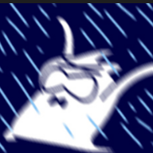

HELLO, WORLD - MY PORTFOLIO
探索人工智能、智能体与网络安全，用代码构建想法。

我关注人工智能与智能体、网络安全、算法与编程， 喜欢通过实际项目理解技术原理，并将想法转化为可运行的程序。
目前，我正在持续提升软件开发能力， 并希望逐步探索人工智能与网络安全的结合。
查看我的项目 ↓基于 C++11 独立开发的回合制策略游戏， 构建 8×8 网格战场，实现单位操控、地形交互、 回合制战斗与敌方 AI 决策。
基于 C++11 与 Easy2D 开发的回合制策略游戏， 实现史莱姆角色系统、战斗引擎、天气与状态效果， 并支持 AI 对战和控制台、图形界面两种模式。
如果你对我的学习项目感兴趣，欢迎联系我
邮箱： hywo3493274513o@sjtu.edu.cn
I'm learning Python, which can visit Python official website to learn more.